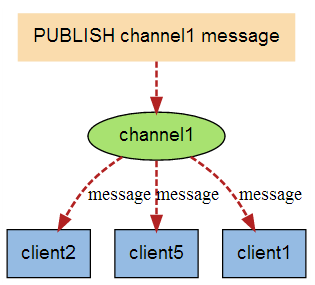

<!DOCTYPE html><html lang="en"><head><meta name="generator" content="Hexo 3.9.0"><meta charset="utf-8"><meta name="keywords" content="个人博客, 松林羊, ysl, songlinsheep, andus, blog, 个人站点, 个人网站"><meta name="description" content="松林羊的个人网站，用于记录，分享。欢迎交流^-^"><meta name="viewport" content="width=device-width,initial-scale=1,maximum-scale=1"><title> Redis(九)-消息订阅与发布 | 松林羊</title><link rel="shortcut icon" href="/smile.ico"><link rel="stylesheet" href="/css/style.css"><link rel="stylesheet" href="/fancybox/jquery.fancybox.min.css"><script src="/js/pace.min.js"></script><script>!function(e,t,o,c,i,a,n){e.DaoVoiceObject=i,e[i]=e[i]||function(){(e[i].q=e[i].q||[]).push(arguments)},e[i].l=1*new Date,a=t.createElement(o),n=t.getElementsByTagName(o)[0],a.async=1,a.src=c,a.charset="utf-8",n.parentNode.insertBefore(a,n)}(window,document,"script",("https:"==document.location.protocol?"https:":"http:")+"//widget.daovoice.io/widget/0f81ff2f.js","daovoice"),daovoice("init",{app_id:"1559132c"}),daovoice("update")</script></head></html><body><main class="content"><section class="outer"><article id="post-Redis-九-消息订阅与发布" class="article article-type-post" itemscope itemprop="blogPost" data-scroll-reveal><div class="article-inner"><header class="article-header"><h1 class="article-title" itemprop="name"> Redis(九)-消息订阅与发布</h1></header><div class="article-meta"> <a href="/2019/08/09/Redis-九-消息订阅与发布/" class="article-date"><time datetime="2019-08-09T08:23:40.000Z" itemprop="datePublished">2019-08-09</time></a><div class="article-category"> <a class="article-category-link" href="/categories/数据库/">数据库</a></div> &emsp;<i class="fe fe-bar-chart"></i> <span class="post-count">744</span>字 &emsp;<i class="fe fe-clock"></i> <span class="post-count">3</span>分钟</div><div class="tocbot"></div><div class="article-entry" itemprop="articleBody"><h3 id="1-定义"><a href="#1-定义" class="headerlink" title="1. 定义"></a>1. 定义</h3><p><strong>Redis 发布订阅(pub/sub)</strong>：是一种进程间消息通信模式——发送者(pub)发送消息，订阅者(sub)接收消息。</p><h3 id="2-示意图"><a href="#2-示意图" class="headerlink" title="2. 示意图"></a>2. 示意图</h3><p><font size="2" color="gray">来源：<a href="https://www.runoob.com/redis/redis-pub-sub.html" target="_blank" rel="noopener">Redis发布订阅|菜鸟教程</a></font></p><p>下图展示了频道 channel1 ， 以及订阅这个频道的三个客户端 —— client2 、 client5 和 client1 之间的关系：<br><br>当有新消息通过 <code>publish</code>命令发送给频道 channel1 时， 这个消息就会被发送给订阅它的三个客户端：<br></p><h3 id="3-案例"><a href="#3-案例" class="headerlink" title="3. 案例"></a>3. 案例</h3><p><font color="red">先订阅后发布</font>才能接收到消息。<br>Redis 客户端可以订阅<code>任意数量</code>的频道。</p><p>步骤：</p><ol><li><p>A-client 订阅渠道，一次可订阅多个。支持通配符：</p><figure class="highlight plain"><table><tr><td class="gutter"><pre><span class="line">1</span><br><span class="line">2</span><br></pre></td><td class="code"><pre><span class="line">subscribe channel*</span><br><span class="line">subscribe channel1 channel2 channel3</span><br></pre></td></tr></table></figure></li><li><p>B-client 在channel2发布消息，发布后订阅者将会收到该条消息</p><figure class="highlight plain"><table><tr><td class="gutter"><pre><span class="line">1</span><br></pre></td><td class="code"><pre><span class="line">publish channel2 hello-subscriber</span><br></pre></td></tr></table></figure></li></ol><h3 id="4-Springboot中使用Redis的sub-pub"><a href="#4-Springboot中使用Redis的sub-pub" class="headerlink" title="4. Springboot中使用Redis的sub/pub"></a>4. Springboot中使用Redis的sub/pub</h3><ol><li><p>Redis的基础信息配置——application.properties</p><figure class="highlight plain"><table><tr><td class="gutter"><pre><span class="line">1</span><br><span class="line">2</span><br><span class="line">3</span><br></pre></td><td class="code"><pre><span class="line">spring.redis.host=127.0.0.1 #  Redis主机ip</span><br><span class="line">spring.redis.port=7989 # Redis服务端口</span><br><span class="line">spring.redis.password= # Redis密码，无的话，留空</span><br></pre></td></tr></table></figure></li><li><p>订阅监听的配置类——RedisPubSubConfig.java</p><figure class="highlight java"><table><tr><td class="gutter"><pre><span class="line">1</span><br><span class="line">2</span><br><span class="line">3</span><br><span class="line">4</span><br><span class="line">5</span><br><span class="line">6</span><br><span class="line">7</span><br><span class="line">8</span><br><span class="line">9</span><br><span class="line">10</span><br><span class="line">11</span><br><span class="line">12</span><br><span class="line">13</span><br><span class="line">14</span><br><span class="line">15</span><br><span class="line">16</span><br><span class="line">17</span><br><span class="line">18</span><br><span class="line">19</span><br><span class="line">20</span><br><span class="line">21</span><br><span class="line">22</span><br><span class="line">23</span><br><span class="line">24</span><br><span class="line">25</span><br><span class="line">26</span><br><span class="line">27</span><br><span class="line">28</span><br><span class="line">29</span><br><span class="line">30</span><br><span class="line">31</span><br><span class="line">32</span><br><span class="line">33</span><br><span class="line">34</span><br><span class="line">35</span><br><span class="line">36</span><br><span class="line">37</span><br><span class="line">38</span><br><span class="line">39</span><br><span class="line">40</span><br><span class="line">41</span><br><span class="line">42</span><br><span class="line">43</span><br><span class="line">44</span><br><span class="line">45</span><br><span class="line">46</span><br><span class="line">47</span><br><span class="line">48</span><br><span class="line">49</span><br><span class="line">50</span><br><span class="line">51</span><br><span class="line">52</span><br></pre></td><td class="code"><pre><span class="line"><span class="keyword">import</span> org.springframework.context.annotation.Bean;</span><br><span class="line"><span class="keyword">import</span> org.springframework.context.annotation.Configuration;</span><br><span class="line"><span class="keyword">import</span> org.springframework.data.redis.connection.RedisConnectionFactory;</span><br><span class="line"><span class="keyword">import</span> org.springframework.data.redis.core.StringRedisTemplate;</span><br><span class="line"><span class="keyword">import</span> org.springframework.data.redis.listener.PatternTopic;</span><br><span class="line"><span class="keyword">import</span> org.springframework.data.redis.listener.RedisMessageListenerContainer;</span><br><span class="line"><span class="keyword">import</span> org.springframework.data.redis.listener.adapter.MessageListenerAdapter;</span><br><span class="line"></span><br><span class="line"><span class="comment">/**</span></span><br><span class="line"><span class="comment"> * Redis订阅监听</span></span><br><span class="line"><span class="comment"> */</span></span><br><span class="line"><span class="meta">@Configuration</span></span><br><span class="line"><span class="keyword">public</span> <span class="class"><span class="keyword">class</span> <span class="title">RedisPubSubConfig</span> </span>&#123;</span><br><span class="line"></span><br><span class="line">	<span class="comment">/**</span></span><br><span class="line"><span class="comment">	 * 1. 使用默认的工厂 初始化redis操作模板</span></span><br><span class="line"><span class="comment">	 */</span></span><br><span class="line">	<span class="meta">@Bean</span></span><br><span class="line">	<span class="function">StringRedisTemplate <span class="title">template</span><span class="params">(RedisConnectionFactory connectionFactory)</span> </span>&#123;</span><br><span class="line">		<span class="keyword">return</span> <span class="keyword">new</span> StringRedisTemplate(connectionFactory);</span><br><span class="line">	&#125;</span><br><span class="line"></span><br><span class="line">	<span class="comment">/**</span></span><br><span class="line"><span class="comment">	 * 2. 创建消息监听器适配器，绑定消息处理器，利用反射技术调用消息处理器的业务方法</span></span><br><span class="line"><span class="comment">	 */</span></span><br><span class="line">	<span class="meta">@Bean</span></span><br><span class="line">	<span class="function">MessageListenerAdapter <span class="title">listenerAdapter</span><span class="params">(RedisReceiverHandler redisReceiverHandler)</span> </span>&#123;</span><br><span class="line">		System.out.println(<span class="string">"消息适配器进来了"</span>);</span><br><span class="line">		<span class="keyword">return</span> <span class="keyword">new</span> MessageListenerAdapter(redisReceiverHandler, <span class="string">"handle"</span>);</span><br><span class="line">	&#125;</span><br><span class="line"></span><br><span class="line">	<span class="comment">/**</span></span><br><span class="line"><span class="comment">	 * 3. 创建redis消息监听器容器</span></span><br><span class="line"><span class="comment">	 * 可以添加多个监听不同话题的redis监听器，只需要把消息监听器和相应的消息订阅处理器绑定，该消息监听器</span></span><br><span class="line"><span class="comment">	 * 通过反射技术调用消息订阅处理器的相关方法进行一些业务处理</span></span><br><span class="line"><span class="comment">	 * <span class="doctag">@param</span> connectionFactory 默认的连接工厂</span></span><br><span class="line"><span class="comment">	 * <span class="doctag">@param</span> listenerAdapter 消息监听器适配器</span></span><br><span class="line"><span class="comment">	 * <span class="doctag">@return</span> 消息监听容器</span></span><br><span class="line"><span class="comment">	 */</span></span><br><span class="line">	<span class="meta">@Bean</span></span><br><span class="line">	<span class="function">RedisMessageListenerContainer <span class="title">container</span><span class="params">(RedisConnectionFactory connectionFactory,MessageListenerAdapter listenerAdapter)</span> </span>&#123;</span><br><span class="line">		<span class="comment">// 创建消息监听容器</span></span><br><span class="line">		RedisMessageListenerContainer container = <span class="keyword">new</span> RedisMessageListenerContainer();</span><br><span class="line">		<span class="comment">// 设置连接工厂</span></span><br><span class="line">		container.setConnectionFactory(connectionFactory);</span><br><span class="line"></span><br><span class="line">		<span class="comment">//可以添加多个 messageListener</span></span><br><span class="line">		container.addMessageListener(listenerAdapter, <span class="keyword">new</span> PatternTopic(<span class="string">"index"</span>));</span><br><span class="line"></span><br><span class="line">		<span class="keyword">return</span> container;</span><br><span class="line">	&#125;	</span><br><span class="line">&#125;</span><br></pre></td></tr></table></figure></li><li><p>收到消息后的处理类——RedisReceiverHandler.java</p><figure class="highlight java"><table><tr><td class="gutter"><pre><span class="line">1</span><br><span class="line">2</span><br><span class="line">3</span><br><span class="line">4</span><br><span class="line">5</span><br><span class="line">6</span><br><span class="line">7</span><br><span class="line">8</span><br><span class="line">9</span><br><span class="line">10</span><br><span class="line">11</span><br><span class="line">12</span><br><span class="line">13</span><br><span class="line">14</span><br><span class="line">15</span><br><span class="line">16</span><br><span class="line">17</span><br></pre></td><td class="code"><pre><span class="line"><span class="keyword">import</span> org.springframework.stereotype.Component;</span><br><span class="line"></span><br><span class="line"><span class="comment">/**</span></span><br><span class="line"><span class="comment"> * 具体的消息处理类</span></span><br><span class="line"><span class="comment"> */</span></span><br><span class="line"><span class="meta">@Component</span></span><br><span class="line"><span class="keyword">public</span> <span class="class"><span class="keyword">class</span> <span class="title">RedisReceiverHandler</span> </span>&#123;</span><br><span class="line"></span><br><span class="line">	<span class="comment">/**</span></span><br><span class="line"><span class="comment">	 * 消息处理方法</span></span><br><span class="line"><span class="comment">	 * <span class="doctag">@param</span> message 发布者发布的消息</span></span><br><span class="line"><span class="comment">	 */</span></span><br><span class="line">	<span class="function"><span class="keyword">public</span> <span class="keyword">void</span> <span class="title">handle</span><span class="params">(String message)</span> </span>&#123;</span><br><span class="line">		System.out.println(<span class="string">"消息来了："</span>+message);</span><br><span class="line">		<span class="comment">//这里是收到通道的消息之后执行的方法</span></span><br><span class="line">	&#125;</span><br><span class="line">&#125;</span><br></pre></td></tr></table></figure></li><li><p>消息发布类——RedisPublishMsg.java</p><figure class="highlight java"><table><tr><td class="gutter"><pre><span class="line">1</span><br><span class="line">2</span><br><span class="line">3</span><br><span class="line">4</span><br><span class="line">5</span><br><span class="line">6</span><br><span class="line">7</span><br><span class="line">8</span><br><span class="line">9</span><br><span class="line">10</span><br><span class="line">11</span><br><span class="line">12</span><br><span class="line">13</span><br><span class="line">14</span><br><span class="line">15</span><br><span class="line">16</span><br><span class="line">17</span><br><span class="line">18</span><br><span class="line">19</span><br><span class="line">20</span><br><span class="line">21</span><br><span class="line">22</span><br><span class="line">23</span><br><span class="line">24</span><br></pre></td><td class="code"><pre><span class="line"><span class="keyword">import</span> org.springframework.beans.factory.annotation.Autowired;</span><br><span class="line"><span class="keyword">import</span> org.springframework.data.redis.core.StringRedisTemplate;</span><br><span class="line"><span class="keyword">import</span> org.springframework.scheduling.annotation.EnableScheduling;</span><br><span class="line"><span class="keyword">import</span> org.springframework.scheduling.annotation.Scheduled;</span><br><span class="line"><span class="keyword">import</span> org.springframework.stereotype.Component;</span><br><span class="line"></span><br><span class="line"><span class="comment">/**</span></span><br><span class="line"><span class="comment"> * 定时器，用于定时发布消息</span></span><br><span class="line"><span class="comment"> */</span></span><br><span class="line"><span class="meta">@EnableScheduling</span></span><br><span class="line"><span class="meta">@Component</span></span><br><span class="line"><span class="keyword">public</span> <span class="class"><span class="keyword">class</span> <span class="title">RedisPublishMsg</span> </span>&#123;</span><br><span class="line"></span><br><span class="line">	<span class="meta">@Autowired</span></span><br><span class="line">	<span class="keyword">private</span> StringRedisTemplate stringRedisTemplate;</span><br><span class="line"></span><br><span class="line">	<span class="comment">/**</span></span><br><span class="line"><span class="comment">	 *  定时通过redis操作模板，向redis消息队列index通道发布消息</span></span><br><span class="line"><span class="comment">	 */</span></span><br><span class="line">	<span class="meta">@Scheduled</span>(fixedRate = <span class="number">3000</span>)</span><br><span class="line">	<span class="function"><span class="keyword">public</span> <span class="keyword">void</span> <span class="title">pubMsg</span><span class="params">()</span></span>&#123;</span><br><span class="line">		stringRedisTemplate.convertAndSend(<span class="string">"index"</span>,String.valueOf(Math.random()));</span><br><span class="line">	&#125;</span><br><span class="line">&#125;</span><br></pre></td></tr></table></figure></li></ol></div><footer class="article-footer"><ul class="article-tag-list"><li class="article-tag-list-item"><a class="article-tag-list-link" href="/tags/Redis/">Redis</a></li></ul><div style="text-align:center;color:#ccc;font-size:14px;margin-top:10px"> ------------- 本文结束&nbsp;<i class="fe fe-smile"></i>&nbsp;感谢您的阅读 -------------</div></footer></div><nav class="article-nav"> <a href="/2019/08/11/Redis-十-主从复制-哨兵模式/" class="article-nav-link"><strong class="article-nav-caption">前一篇</strong><div class="article-nav-title"> Redis(十)-主从复制+哨兵模式</div></a> <a href="/2019/08/08/Redis-八-事务/" class="article-nav-link"><strong class="article-nav-caption">后一篇</strong><div class="article-nav-title">Redis(八)-事务</div></a></nav><div class="comment_headling" style="margin-top:5rem"><font size="5"><i class="fe fe-comments"></i> 评论</font></div><div class="comment"></div><script src="https://cdn1.lncld.net/static/js/3.0.4/av-min.js"></script><script src="/js/Valine.min.js"></script><script type="text/javascript">GUEST_INFO=["nick","mail","link"],guest_info="nick,mail,link".split(",").filter(function(i){return-1<GUEST_INFO.indexOf(i)}),guest_info=0==guest_info.length?GUEST_INFO:guest_info,new Valine({av:AV,el:".comment",app_id:"fq4O7Xaf1cYDbADGellNEn6V-gzGzoHsz",app_key:"a626rNIHkVVk8tGBBCfaQjb9",placeholder:"记得留下你的昵称和邮箱...可以快速收到回复ヾﾉ≧∀≦)o",meta:guest_info,notify:!0,verify:!1,avatar:"monsterid",recordIP:!0,visitor:!1,lang:"zh-cn"})</script></article></section><footer class="footer"><div class="outer"><ul class="list-inline"><li>已分享 48 篇博文，累计 <span class="post-count">55.1k</span> 字</li><ul class="list-inline"><li><i class="fe fe-smile-alt"></i>&nbsp;访客数&emsp;<span id="busuanzi_value_site_uv"></span></li><li><i class="fe fe-bookmark"></i>&nbsp;文章访问量&emsp;<span id="busuanzi_value_page_pv"></span></li></ul></ul><ul class="list-inline"><li><span id="timeDate">载入天数...</span><span id="times">载入时分秒...</span></li><script>var now=new Date;function createtime(){var n=new Date("07/28/2019 10:02:00");now.setTime(now.getTime()+250),days=(now-n)/1e3/60/60/24,dnum=Math.floor(days),hours=(now-n)/1e3/60/60-24*dnum,hnum=Math.floor(hours),1==String(hnum).length&&(hnum="0"+hnum),minutes=(now-n)/1e3/60-1440*dnum-60*hnum,mnum=Math.floor(minutes),1==String(mnum).length&&(mnum="0"+mnum),seconds=(now-n)/1e3-86400*dnum-3600*hnum-60*mnum,snum=Math.round(seconds),1==String(snum).length&&(snum="0"+snum),document.getElementById("timeDate").innerHTML="已等候你 "+dnum+" 天 ",document.getElementById("times").innerHTML=hnum+" 小时 "+mnum+" 分 "+snum+" 秒"}setInterval("createtime()",250)</script><ul class="list-inline"><li>&copy; 2019-2020 松林羊</li><li>Theme <a href="https://github.com/zhwangart/hexo-theme-ocean">Ocean</a></li></ul></ul></div></footer></main><aside class="sidebar sidebar-specter"> <button class="navbar-toggle"></button><nav class="navbar"><div class="logo"> <a href="/"></a></div><ul class="nav nav-main"><li class="nav-item"> <a class="nav-item-link" href="/" target="_self">主页</a></li><li class="nav-item"> <a class="nav-item-link" href="/archives" target="_self">归档</a></li><li class="nav-item"> <a class="nav-item-link" href="/categories" target="_self">分类</a></li><li class="nav-item"> <a class="nav-item-link" href="/tags" target="_self">标签</a></li><li class="nav-item"> <a class="nav-item-link" href="/links" target="_self">友链</a></li><li class="nav-item"> <a class="nav-item-link">综合</a><ul class="nav nav-main nav2"><li class="nav-item li2"> <a class="nav-item-link-child" href="/resource" target="_self">资 源</a></li><li class="nav-item li2"> <a class="nav-item-link-child" href="/site" target="_self">网 站</a></li></ul></li><li class="nav-item"> <a class="nav-item-link">关于</a><ul class="nav nav-main nav2"><li class="nav-item li2"> <a class="nav-item-link-child" href="/me" target="_self">博 主</a></li><li class="nav-item li2"> <a class="nav-item-link-child" href="http://stars.andus.top/" target="_blank">记 录</a></li><li class="nav-item li2"> <a class="nav-item-link-child" href="/plan" target="_self">计 划</a></li></ul></li><li class="nav-item"> <a class="nav-item-link" href="http://resume.andus.top/" target="_blank">简 历</a></li><li class="nav-item"><a class="nav-item-link nav-item-search" title="搜索"><i class="fe fe-search"></i> 搜索</a></li></ul></nav><nav class="navbar navbar-bottom"><ul class="nav"><li class="nav-item"><div class="totop" id="totop"><i class="fe fe-rocket"></i></div></li><li class="nav-item"></li></ul></nav><div class="search-form-wrap"><div class="local-search local-search-plugin"> <input type="search" id="local-search-input" class="local-search-input" placeholder="Search..."><div id="local-search-result" class="local-search-result"></div></div></div></aside><script src="/js/jquery-2.0.3.min.js"></script><script src="/js/jquery.justifiedGallery.min.js"></script><script src="/js/lazyload.min.js"></script><script src="/js/busuanzi-2.3.pure.min.js"></script><script src="/fancybox/jquery.fancybox.min.js"></script><script src="/js/tocbot.min.js"></script><script>900<=document.body.clientWidth&&tocbot.init({tocSelector:".tocbot",contentSelector:".article-entry",headingSelector:"h1, h2, h3, h4, h5, h6",hasInnerContainers:!0,scrollSmooth:!0,positionFixedSelector:".tocbot",positionFixedClass:"is-position-fixed",fixedSidebarOffset:"auto"})</script><script src="/js/ocean.js"></script><script src="/js/andus.js"></script><script src="/js/love.js"></script><script>$("img:not(#andus-head-img)").each(function(){$(this).wrap('<a class="fancybox" data-fancybox="gallery" href="'+$(this).prop("src")+'"></a>')})</script><script src="/live2dw/lib/L2Dwidget.min.js?094cbace49a39548bed64abff5988b05"></script><script>L2Dwidget.init({model:{scale:1,hHeadPos:.5,vHeadPos:.618,jsonPath:"/live2dw/assets/haruto.model.json"},display:{superSample:2,width:150,height:300,position:"left",hOffset:0,vOffset:-20},mobile:{show:!1},react:{opacityDefault:.5,opacityOnHover:.2},log:!1,pluginJsPath:"lib/",pluginModelPath:"assets/",pluginRootPath:"live2dw/",tagMode:!1})</script></body>